b02_nut_bolt_assembly
legacy task — not in the shipped language bank (bank covers the 66 paper tasks)
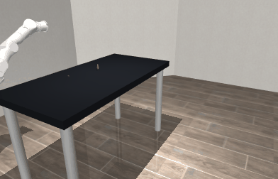
b02_nut_bolt_assembly_wuji2_scene_isaac.xml · generated by their prepare_task_mjcf(wuji2)
b320_towel_corner_synchronized_spread
“Hold the mug upright under the faucet with the left hand. Open the right lever outward past 70 percent, fill for half a second, place the mug on the marked pad, and close the faucet.” (bank entry: t05_fill_cup)
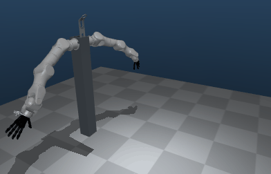
b320_towel_corner_synchronized_spread_wuji2_scene_isaac.xml · generated by their prepare_task_mjcf(wuji2)
task objects are runtime-authored in their Isaac pipeline — not present in the prepared MJCF
bench320_hl015_bimanual_cable_route_dual_plug
“Insert the charger plug into the power strip first, then insert the charging cable connector into the charger head.” (bank entry: t02_connect_charger_and_cable)
bench320_hl015_bimanual_cable_route_dual_plug_wuji2_scene_isaac.xml · generated by their prepare_task_mjcf(wuji2)
bench320_hs014_bottle_stabilized_cap_opening
“Pick the apple and place it into the bucket.”
“Pick the banana and place it into the bucket.”
“Pick the orange and place it into the bucket.” (bank entry: t26_place_fruit_in_bucket)
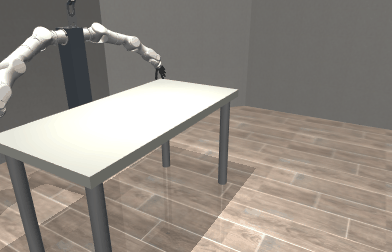
bench320_hs014_bottle_stabilized_cap_opening_wuji2_scene_isaac.xml · generated by their prepare_task_mjcf(wuji2)
task objects are runtime-authored in their Isaac pipeline — not present in the prepared MJCF
bimanual_assembly
legacy task — not in the shipped language bank (bank covers the 66 paper tasks)
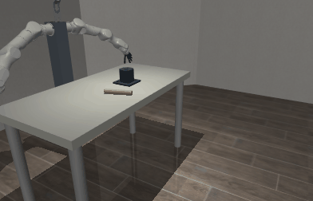
bimanual_assembly_wuji2_scene_isaac.xml · generated by their prepare_task_mjcf(wuji2)
bimanual_hanoi
legacy task — not in the shipped language bank (bank covers the 66 paper tasks)
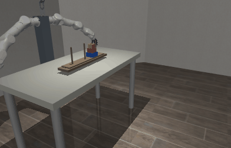
bimanual_hanoi_wuji2_scene_isaac.xml · generated by their prepare_task_mjcf(wuji2)
bimanual_microwave_cook
“Open the microwave door, carry the plate with its food box into the microwave, close the door, then press the green start button.” (bank entry: t12_load_and_start_microwave)
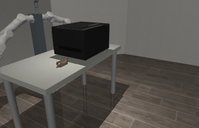
bimanual_microwave_cook_wuji2_scene_isaac.xml · generated by their prepare_task_mjcf(wuji2)
bimanual_photograph
“Pick up the camera, aim it at the logo, and press the shutter button.” (bank entry: t23_photograph_logo)
bimanual_photograph_wuji2_scene_isaac.xml · generated by their prepare_task_mjcf(wuji2)
bimanual_unlock_ipad
legacy task — not in the shipped language bank (bank covers the 66 paper tasks)
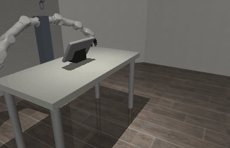
bimanual_unlock_ipad_wuji2_scene_isaac.xml · generated by their prepare_task_mjcf(wuji2)
c07_pitcher_pour_cup
legacy task — not in the shipped language bank (bank covers the 66 paper tasks)
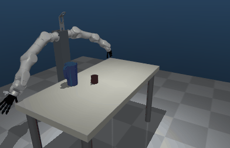
c07_pitcher_pour_cup_wuji2_scene_isaac.xml · generated by their prepare_task_mjcf(wuji2)
c08_tongs_ice_cubes
“Hold the water bottle with the left hand. Brush its lower, middle, then upper bands with the right hand. Release both objects, leaving the bottle upright and stable.” (bank entry: t37_scrub_bottle)
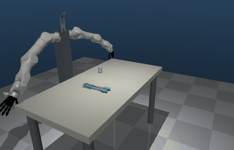
c08_tongs_ice_cubes_wuji2_scene_isaac.xml · generated by their prepare_task_mjcf(wuji2)
c09_staple_paper_sheets
“Hold the water bottle with the left hand. Brush its lower, middle, then upper bands with the right hand. Release both objects, leaving the bottle upright and stable.” (bank entry: t37_scrub_bottle)
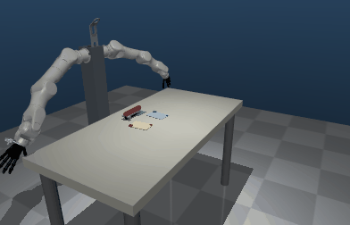
c09_staple_paper_sheets_wuji2_scene_isaac.xml · generated by their prepare_task_mjcf(wuji2)
c11_xylophone_sequence
“Hold the water bottle with the left hand. Brush its lower, middle, then upper bands with the right hand. Release both objects, leaving the bottle upright and stable.” (bank entry: t37_scrub_bottle)
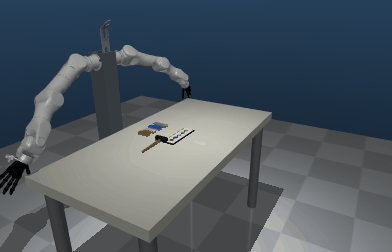
c11_xylophone_sequence_wuji2_scene_isaac.xml · generated by their prepare_task_mjcf(wuji2)
click_mouse
“Move the mouse onto the mouse pad without pressing either button, then click the left mouse button.” (bank entry: t14_move_and_click_mouse)
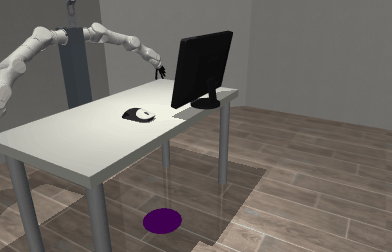
t14_move_and_click_mouse_wuji2_scene_isaac.xml · generated by their prepare_task_mjcf(wuji2)
objects ['link_3'] moved onto the tabletop FOR DISPLAY (shipped authoring places them off-table at floor height)
eval_comb01_cover_pitcher_and_box
“First align and seat the pitcher lid, then release it and let it settle. Next align and seat the clear-box lid, release it and let it settle. Both lids must remain correctly seated on their own containers.”
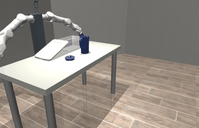
eval_comb01_cover_pitcher_and_box_wuji2_scene_isaac.xml · generated by their prepare_task_mjcf(wuji2)
eval_comb02_open_laptop_and_click_mouse
“Open the initially closed laptop to 30 degrees with either hand and let it settle; you may release the screen. Move the mouse onto its pad without pressing either button, then click the left button once. Keep the laptop at the target angle and the mouse on the pad while the scene settles.”
“Open the initially closed laptop to 60 degrees with either hand and let it settle; you may release the screen. Move the mouse onto its pad without pressing either button, then click the left button once. Keep the laptop at the target angle and the mouse on the pad while the scene settles.”
“Open the initially closed laptop to 90 degrees with either hand and let it settle; you may release the screen. Move the mouse onto its pad without pressing either button, then click the left button once. Keep the laptop at the target angle and the mouse on the pad while the scene settles.”
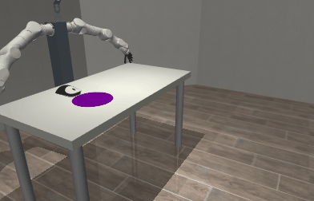
eval_comb02_open_laptop_and_click_mouse_wuji2_scene_isaac.xml · generated by their prepare_task_mjcf(wuji2)
fold_glasses
legacy task — not in the shipped language bank (bank covers the 66 paper tasks)
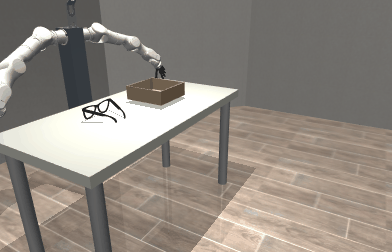
fold_glasses_wuji2_scene_isaac.xml · generated by their prepare_task_mjcf(wuji2)
hammer_nail
“Hold the wood block with the left hand, keeping its nail inserted. Pick up the hammer with the right hand and strike the nail so it sinks into the block.” (bank entry: t08_hammer_nail)
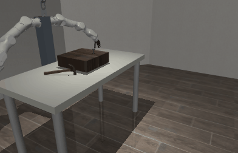
t08_hammer_nail_wuji2_scene_isaac.xml · generated by their prepare_task_mjcf(wuji2)
p003_bimanual_folding_ruler_shape_configuration
“Hold the water bottle with the left hand. Brush its lower, middle, then upper bands with the right hand. Release both objects, leaving the bottle upright and stable.” (bank entry: t37_scrub_bottle)
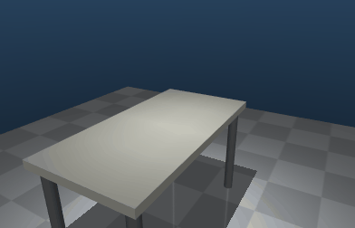
p003_bimanual_folding_ruler_shape_configuration_wuji2_scene_isaac.xml · generated by their prepare_task_mjcf(wuji2)
task objects are runtime-authored in their Isaac pipeline — not present in the prepared MJCF
p006_side_release_buckle_align_press
“Hold the water bottle with the left hand. Brush its lower, middle, then upper bands with the right hand. Release both objects, leaving the bottle upright and stable.” (bank entry: t37_scrub_bottle)
p006_side_release_buckle_align_press_wuji2_scene_isaac.xml · generated by their prepare_task_mjcf(wuji2)
task objects are runtime-authored in their Isaac pipeline — not present in the prepared MJCF
pick_bucket
“Pick the apple and place it into the bucket.”
“Pick the banana and place it into the bucket.”
“Pick the orange and place it into the bucket.” (bank entry: t26_place_fruit_in_bucket)
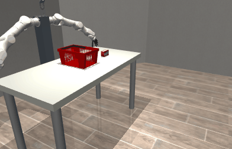
pick_bucket_wuji2_scene_isaac.xml · generated by their prepare_task_mjcf(wuji2)
pinch_tongs
legacy task — not in the shipped language bank (bank covers the 66 paper tasks)
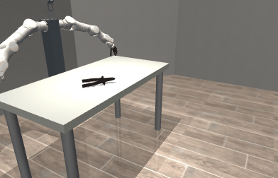
pinch_tongs_wuji2_scene_isaac.xml · generated by their prepare_task_mjcf(wuji2)
objects ['link_1'] moved onto the tabletop FOR DISPLAY (shipped authoring places them off-table at floor height)
t02_connect_charger_and_cable
“Insert the charger plug into the power strip first, then insert the charging cable connector into the charger head.”
t02_connect_charger_and_cable_wuji2_scene_isaac.xml · generated by their prepare_task_mjcf(wuji2)
t03_cover_box
“Align the box lid and place it onto the clear box.”
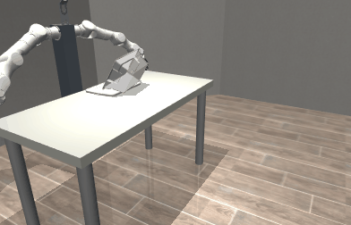
t03_cover_box_wuji2_scene_isaac.xml · generated by their prepare_task_mjcf(wuji2)
t04_cover_pitcher
“Align the pitcher lid and place it onto the pitcher body.”
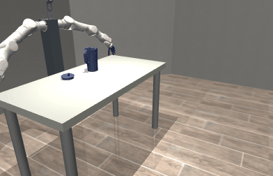
t04_cover_pitcher_wuji2_scene_isaac.xml · generated by their prepare_task_mjcf(wuji2)
t08_hammer_nail
“Hold the wood block with the left hand, keeping its nail inserted. Pick up the hammer with the right hand and strike the nail so it sinks into the block.”
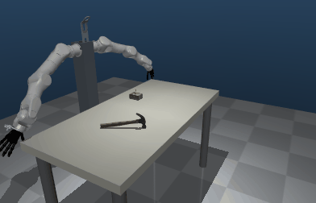
t08_hammer_nail_wuji2_scene_isaac.xml · generated by their prepare_task_mjcf(wuji2)
t09_insert_peg
“Insert the round peg into the socket tray hole.”
t09_insert_peg_wuji2_scene_isaac.xml · generated by their prepare_task_mjcf(wuji2)
t11_line_up_blocks
“Use only the set square tool to push three scattered wood blocks onto the baseline and align them side by side.”
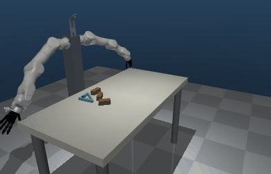
t11_line_up_blocks_wuji2_scene_isaac.xml · generated by their prepare_task_mjcf(wuji2)
t13_load_cans
“Pick up both soup cans with their assigned hands and cross-load them into the opposite bin partitions. Release them within the synchronization window and leave them stable.”
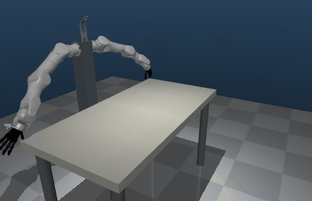
t13_load_cans_wuji2_scene_isaac.xml · generated by their prepare_task_mjcf(wuji2)
task objects are runtime-authored in their Isaac pipeline — not present in the prepared MJCF
t14_move_and_click_mouse
“Move the mouse onto the mouse pad without pressing either button, then click the left mouse button.”
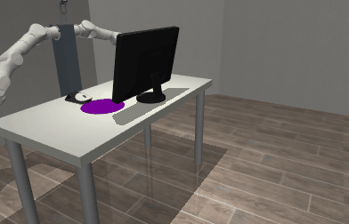
t14_move_and_click_mouse_wuji2_scene_isaac.xml · generated by their prepare_task_mjcf(wuji2)
t16_open_laptop
“Lift the laptop display from its front edge with the right hand and open it to 60 degrees.”
“Lift the laptop display from its front edge with the right hand and open it to 90 degrees.”
“Lift the laptop display from its front edge with the right hand and open it to 120 degrees.”
t16_open_laptop_wuji2_scene_isaac.xml · generated by their prepare_task_mjcf(wuji2)
task objects are runtime-authored in their Isaac pipeline — not present in the prepared MJCF
t17_open_latched_door
“Depress the near lever past 45 degrees with the left hand for five frames. Push the unlatched door to 45 degrees with the right hand, avoiding the table, frame, and far handle.”
t17_open_latched_door_wuji2_scene_isaac.xml · generated by their prepare_task_mjcf(wuji2)
task objects are runtime-authored in their Isaac pipeline — not present in the prepared MJCF
t19_orient_cup_upright
“Pick up the cup and place it upright on the table.”
t19_orient_cup_upright_wuji2_scene_isaac.xml · generated by their prepare_task_mjcf(wuji2)
t22_pass_screwdriver
“Touch the screwdriver with the right hand first, then touch it with the left hand while it is airborne, and let it land in the horizontal green target zone.”
t22_pass_screwdriver_wuji2_scene_isaac.xml · generated by their prepare_task_mjcf(wuji2)
task objects are runtime-authored in their Isaac pipeline — not present in the prepared MJCF
t23_photograph_logo
“Pick up the camera, aim it at the logo, and press the shutter button.”
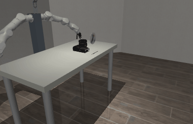
t23_photograph_logo_wuji2_scene_isaac.xml · generated by their prepare_task_mjcf(wuji2)
t24_place_ball_in_bowl
“Pick the tennis ball and place it into the bowl.”
“Pick the mini soccer ball and place it into the bowl.”
“Pick the golf ball and place it into the bowl.”
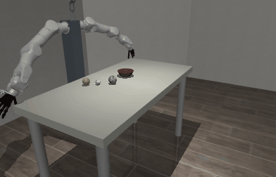
t24_place_ball_in_bowl_wuji2_scene_isaac.xml · generated by their prepare_task_mjcf(wuji2)
t25_place_cup_on_plate
“Pick up the mug and place it upright in the center of the plate.”
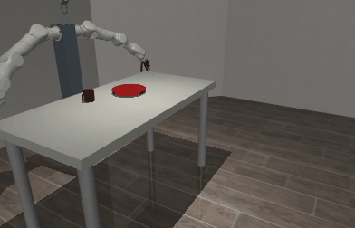
t25_place_cup_on_plate_wuji2_scene_isaac.xml · generated by their prepare_task_mjcf(wuji2)
t26_place_fruit_in_bucket
“Pick the apple and place it into the bucket.”
“Pick the banana and place it into the bucket.”
“Pick the orange and place it into the bucket.”
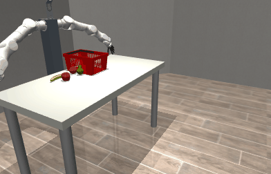
t26_place_fruit_in_bucket_wuji2_scene_isaac.xml · generated by their prepare_task_mjcf(wuji2)
t34_roll_ball_through_gate
“Roll or flick the tennis ball from its starting side through the opening between the cracker box and the sugar box. Keep it on the table without picking it up or touching either box.”
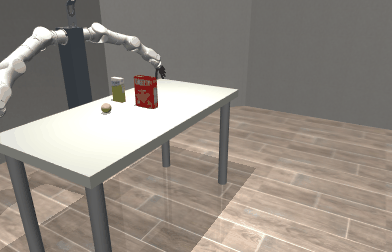
t34_roll_ball_through_gate_wuji2_scene_isaac.xml · generated by their prepare_task_mjcf(wuji2)
t36_scoop_marbles
“Keep the spoon level or slightly nose-down, scoop the marble, carry it over the bowl, and pour it into the bowl.”
t36_scoop_marbles_wuji2_scene_isaac.xml · generated by their prepare_task_mjcf(wuji2)
t37_scrub_bottle
“Hold the water bottle with the left hand. Brush its lower, middle, then upper bands with the right hand. Release both objects, leaving the bottle upright and stable.”
t37_scrub_bottle_wuji2_scene_isaac.xml · generated by their prepare_task_mjcf(wuji2)
task objects are runtime-authored in their Isaac pipeline — not present in the prepared MJCF
t40_slide_knife_blade
“Pick up the utility knife with the right hand, then use the left fingertips on its slider to extend the blade fully.”
“Pick up the utility knife with the right hand, then use the left fingertips on its slider to retract the blade fully.”
t40_slide_knife_blade_wuji2_scene_isaac.xml · generated by their prepare_task_mjcf(wuji2)
task objects are runtime-authored in their Isaac pipeline — not present in the prepared MJCF
t44_stack_blocks
“Arrange the four blocks into four distinct height layers with the large wood block on the bottom layer, then keep the hand from touching the blocks for 0.5 seconds.”
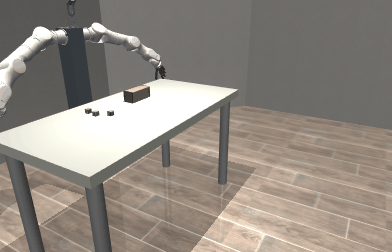
t44_stack_blocks_wuji2_scene_isaac.xml · generated by their prepare_task_mjcf(wuji2)
t46_store_charger
“Hold the drawer open with the left hand and place the charger fully inside with the right. Release the charger, then the drawer, and hold stable for half a second.”
t46_store_charger_wuji2_scene_isaac.xml · generated by their prepare_task_mjcf(wuji2)
task objects are runtime-authored in their Isaac pipeline — not present in the prepared MJCF
t48_unfold_fan
“Use both hands to grasp the two outermost fan ribs and unfold the fan symmetrically to 60 degrees, then hold it steadily on the table.”
“Use both hands to grasp the two outermost fan ribs and unfold the fan symmetrically to 120 degrees, then hold it steadily on the table.”
“Use both hands to grasp the two outermost fan ribs and unfold the fan symmetrically to 90 degrees, then hold it steadily on the table.”
t48_unfold_fan_wuji2_scene_isaac.xml · generated by their prepare_task_mjcf(wuji2)
task objects are runtime-authored in their Isaac pipeline — not present in the prepared MJCF
t50_water_plant
“Grasp the spray bottle and aim it at the plant before pressing, then press the sprayer so that the water lands on the plant or its soil.”
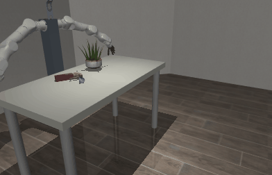
t50_water_plant_wuji2_scene_isaac.xml · generated by their prepare_task_mjcf(wuji2)
user_make_pizza_long_horizon
“Hold the water bottle with the left hand. Brush its lower, middle, then upper bands with the right hand. Release both objects, leaving the bottle upright and stable.” (bank entry: t37_scrub_bottle)
user_make_pizza_long_horizon_wuji2_scene_isaac.xml · generated by their prepare_task_mjcf(wuji2)
task objects are runtime-authored in their Isaac pipeline — not present in the prepared MJCF
water_plant
“Grasp the spray bottle and aim it at the plant before pressing, then press the sprayer so that the water lands on the plant or its soil.” (bank entry: t50_water_plant)
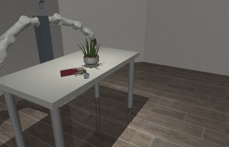
t50_water_plant_wuji2_scene_isaac.xml · generated by their prepare_task_mjcf(wuji2)
z01_pipette
“Pick the apple and place it into the bucket.”
“Pick the banana and place it into the bucket.”
“Pick the orange and place it into the bucket.” (bank entry: t26_place_fruit_in_bucket)
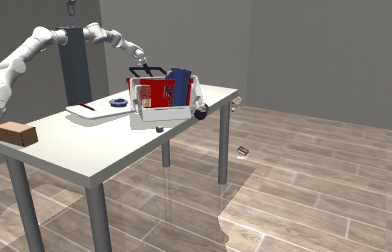
z01_pipette_wuji2_scene_isaac.xml · generated by their prepare_task_mjcf(wuji2)
z02_bottle_cap
“Pick the apple and place it into the bucket.”
“Pick the banana and place it into the bucket.”
“Pick the orange and place it into the bucket.” (bank entry: t26_place_fruit_in_bucket)
z02_bottle_cap_wuji2_scene_isaac.xml · generated by their prepare_task_mjcf(wuji2)